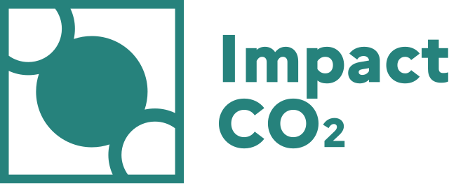

Outil : Impact CO₂
Impact CO₂ est un simulateur développé par l'ADEME qui permet de visualiser l'empreinte environnementale du numérique et de la comparer à des actions du quotidien.
Cet outil est essentiel pour rendre vos données techniques compréhensibles par tous : managers, clients, utilisateurs finaux.
Ouvrir l'outil Impact CO₂
L'outil s'ouvrira dans un nouvel onglet